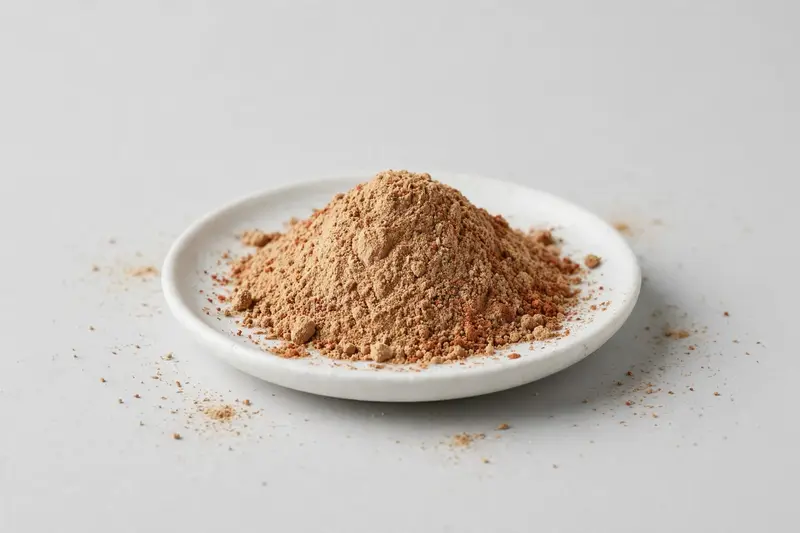

Arjuna — a traditional bark botanical for heart-health-positioned formulations.

Overview
Arjuna extract is produced from the bark of Terminalia arjuna and is a long-standing ingredient in Ayurvedic-inspired supplement development. Buyers frequently request either tannin-standardized grades or arjunolic acid specifications, depending on whether the formulation leans on polyphenol content or a triterpenoid marker. Operating as a Xi'an-based trading company, we source through partner producers and confirm feasibility once a buyer's target specification is on the table.
Specifications below reflect commonly requested options in the market — not a stock list. Share your target spec and we'll confirm exactly what we can supply, honestly.
| Specification | Details |
|---|---|
| Botanical identity | Arjuna bark extract powder (Terminalia arjuna) |
| Marker compound | Commonly requested spec grades: tannin-standardized grades and arjunolic acid grades; actual specs confirmed on inquiry |
| Appearance | Light tan to reddish-brown fine powder |
| Mesh size | Typically 80–100 mesh (confirm per inquiry) |
| Testing | COA/TDS arranged on request; scope agreed per your spec |
Applications
Documentation
We don't claim in-house labs or certifications we don't hold. COA and TDS documents can be arranged on request, and testing scope is agreed against your specification before supply.
FAQ
Related products
Panax ginseng
Key marker: Ginsenosides
View specs →Curcuma longa
Key marker: Curcuminoids
View specs →Nattokinase (fermented soybean enzyme)
Key marker: 20,000-40,000 FU/g
View specs →Tinospora cordifolia
Key marker: Cordifolioside Content
View specs →Rubia cordifolia
Key marker: Purpurin Content
View specs →Send your target spec and volumes — we'll respond with a tailored quotation.
Request a Quote